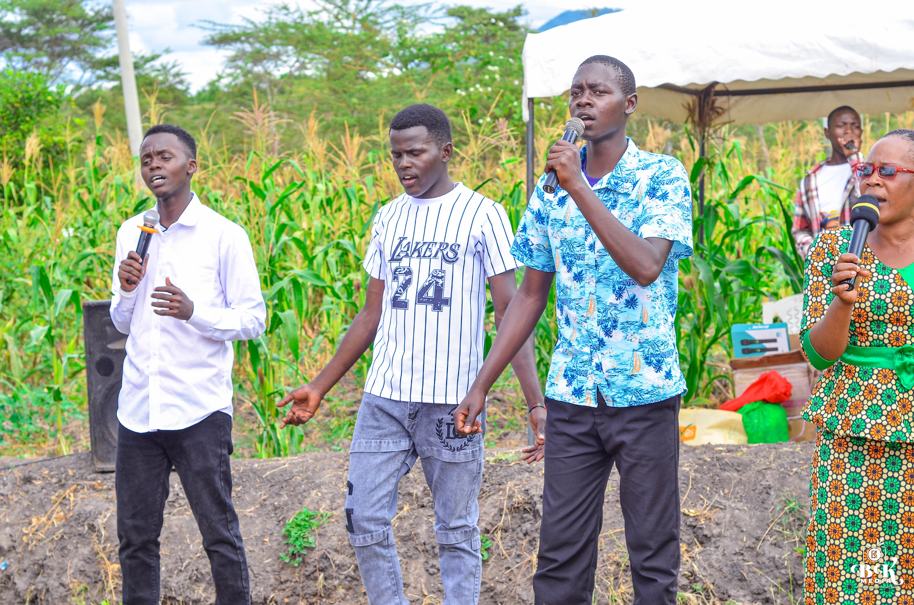
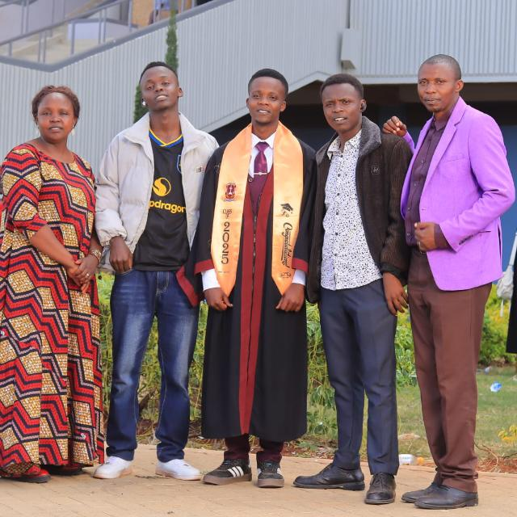
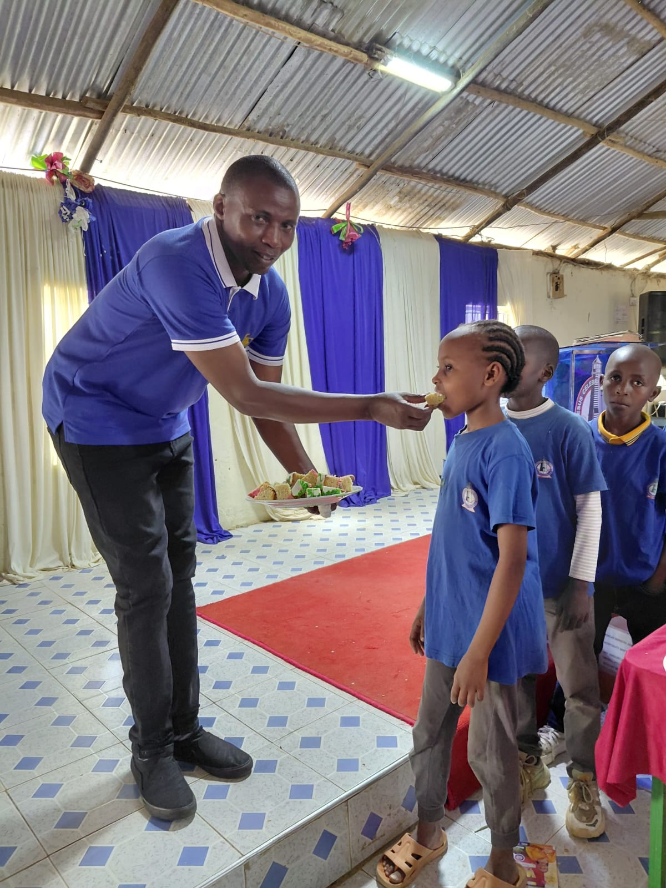
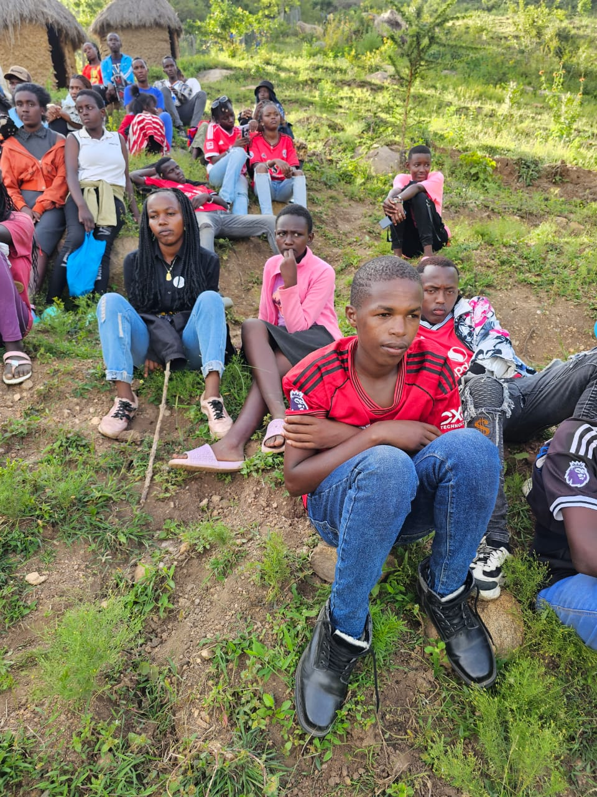
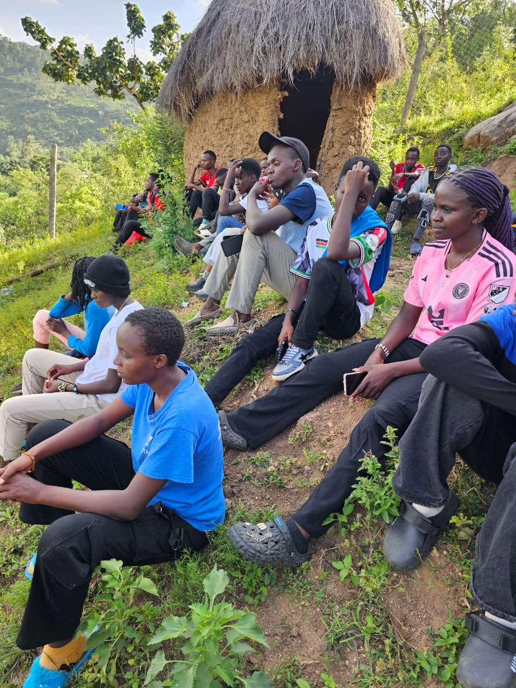
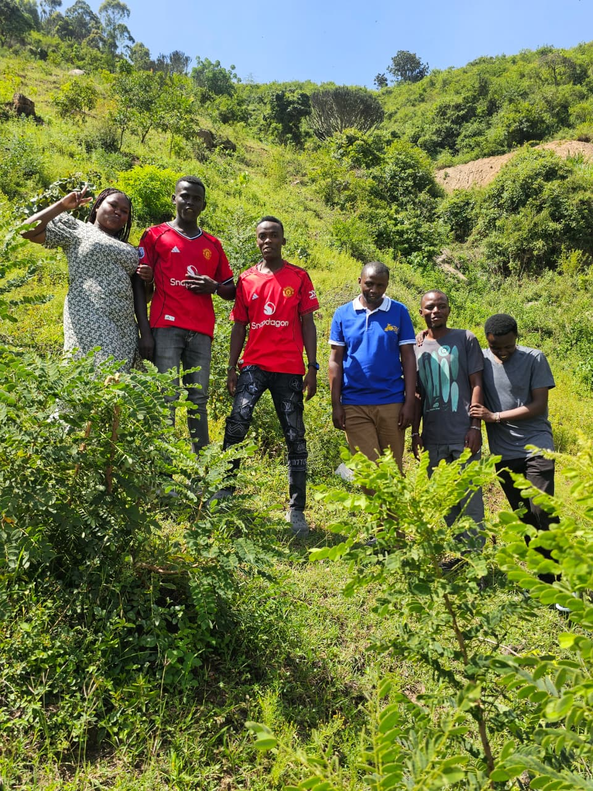
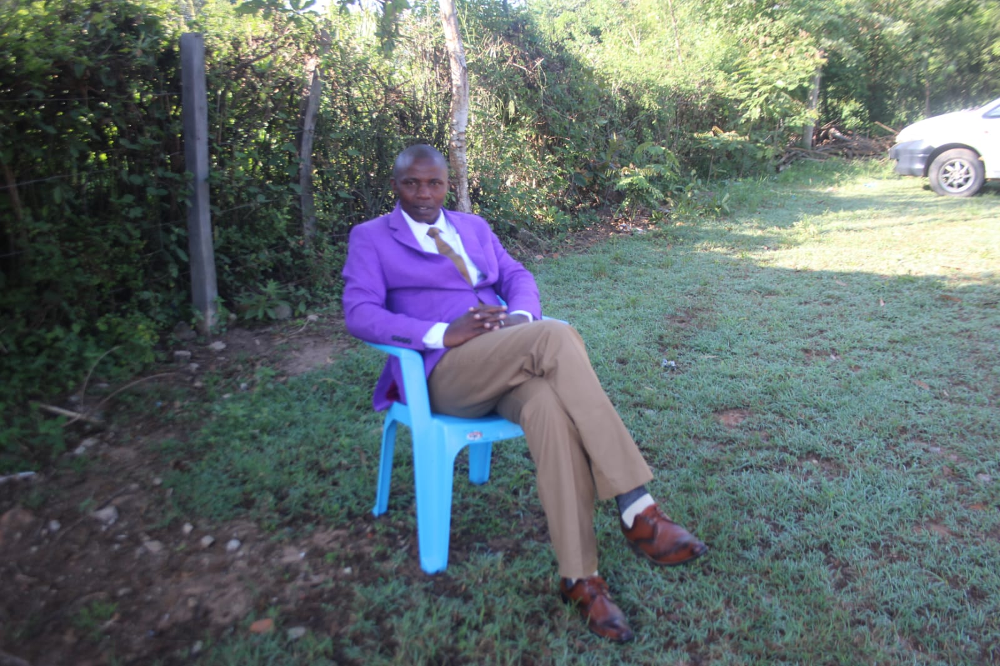

Life and Ministry in Etikoni
A photo journal documenting the reality of our village—from outdoor youth fellowships and Awana clubs to educational triumphs and heartfelt community care. Click any photo to see it in full view.

WorshipOpen-Air Praise & Worship
Youth worship leaders giving praise amidst the village maize fields.

EducationUniversity Graduation Celebration
Class of 2025: Breaking generational cycles of rural poverty.
A Mother's Unbroken Joy
Generational hope restored through educational persistence.

Care & MentorshipSharing Food & Encouragement
Touching a child, listening to their heart, and strengthening families.
 Church Home
Church Home
Church Fellowship & Awana Ministry
JCC Etikoni congregation united for youth outreach and the nation.

OutreachHillside Youth Assembly
Listening to youth dreams and challenges where they live.

Village RealityDirect Homestead Outreach
Reaching the most vulnerable families beyond church walls.

MentorshipHilltop Hiking & Team Building
Inspiring confidence, endurance, and brotherhood in nature.
 Leadership
Leadership
Watching Over the Land
Pastoral oversight and continuous prayer for Mbiuni Ward.
Dignity & Pastoral Calling
Leading the church and outreach with integrity and grace.

CommunityAlways Accessible to the Flock
An open door and listening ear for every village family.
Help Us Write the Next Success Story
Every photograph on this page represents real lives being touched by faith and compassion. Help us keep more children in school and off the streets.
Sponsor a Student Today